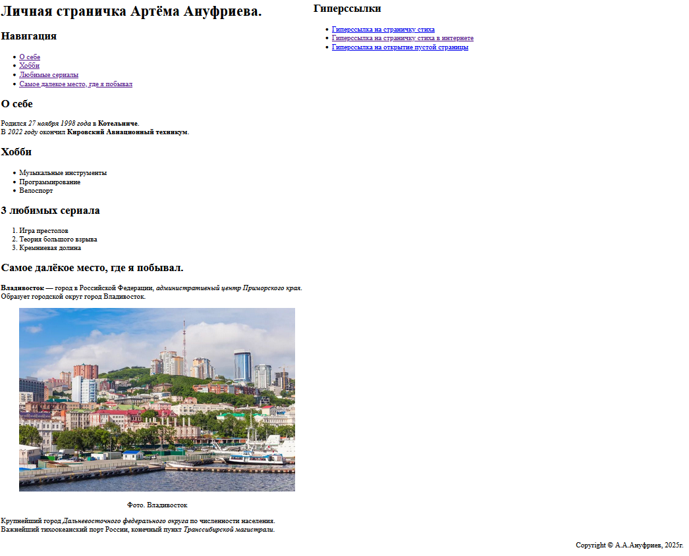
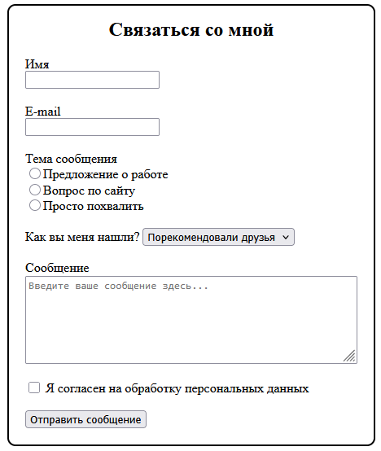

Анализ сайта
Скриншоты страниц
1. about.html

2. feedback.html

Ответы на вопросы
1. Основные проблемы визуального представления информации
- На странице about.html не хватает единого стиля и цветовой схемы — элементы расположены немного хаотично, отсутствуют отступы между блоками.
- Текст и заголовки слишком близко друг к другу, нет визуальной иерархии (например, разного размера шрифтов для секций).
- На странице feedback.html форма выглядит упрощённо — поля выровнены не идеально, элементы формы расположены с разным интервалом.
2. Трудности при выравнивании элементов формы
- Использование только HTML без CSS ограничивает возможности точного позиционирования.
- Трудно добиться одинаковых отступов между метками и полями.
- При изменении ширины окна браузера форма может терять симметрию без адаптивной верстки (flexbox, grid и т.д.).
3. Чего не хватает HTML для создания удобных и красивых страниц
- HTML описывает только структуру, но не внешний вид — не хватает средств для стилизации (нужен CSS).
- Для динамических эффектов (валидация, подсветка ошибок, анимация) необходим JavaScript.
- Невозможно создать современную адаптивную сетку без внешних технологий вроде Flexbox или Grid Layout.